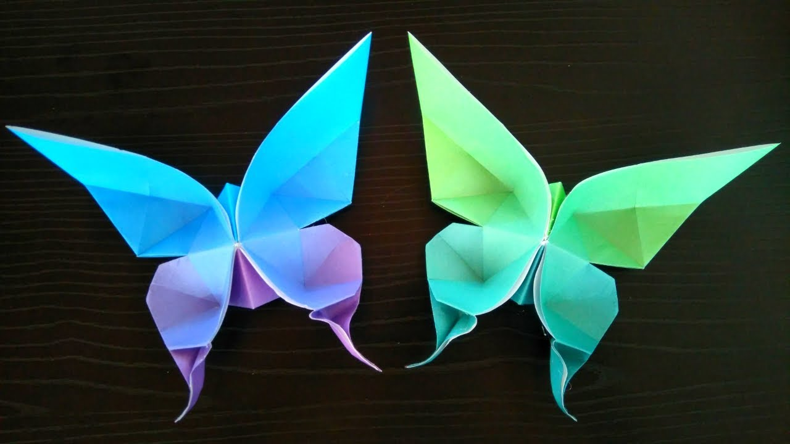
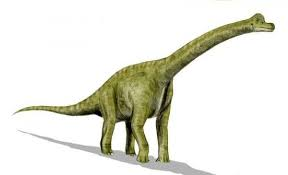

Camels

Interesting Facts about Camels.
- There are two types of camels: One humped or “dromedary” camels and two humped Bactrian camels.
- Camels have thick lips which let them forage for thorny plants other animals can't eat.
- Camels have three sets of eyelids and two rows of eyelashes to keep sand out of their eyes. CLICK HERE
Chameleon

Interesting Facts about Chameleon.
- Chameleon are reptiles that are part of the iguana suborder.
- Changing skin color is an important part of communication among chameleons.
- Most chameleons have a prehensile tail that they use to use to wrap around tree brancher. CLICK HERE
Pigeon

Interesting Facts about pigeon.
- Pigeon are incredibly complex and intelligent animals.
- Pigeon have excellent hearting abilites.
- Pigeon are renowned for their outstanding naigational abilites. CLICK HERE

Panda

Interesting Facts about Panda.
- They have great camouflage for their environment.
- Their eyes are different to narmal bears.
- Cubs are well protected in their first month. CLICK HERE
Flying-cicada

Interesting Facts about Flying-cicada.
- There are more than 3,000 species of cicadas.
- Cicadas make noise like toy frogs.
- Their enemies are the stuff of nightmares. CLICK HERE
ButterFly
Interesting Facts about ButterFly.
- Butterflies are beautiful,flying insects with large scaly wings.
- Like all insects, they have six jointed legs, 3 body parts, a pair of antennae, compound eyes, and an exoskeleton.
- The butterfly's body is covered by tiny sensory hairs. CLICK HERE
DINOSAUR
Interesting Facts about DINOSAUR.
- Dinosaurs walked the earth for over 165 million years.
- They lived during a period of time known as the Mesozoic Era, or Age of Reptiles.
- At the end of the Cretaceous Period they became extinct – that was around 65 million years ago. CLICK HERE